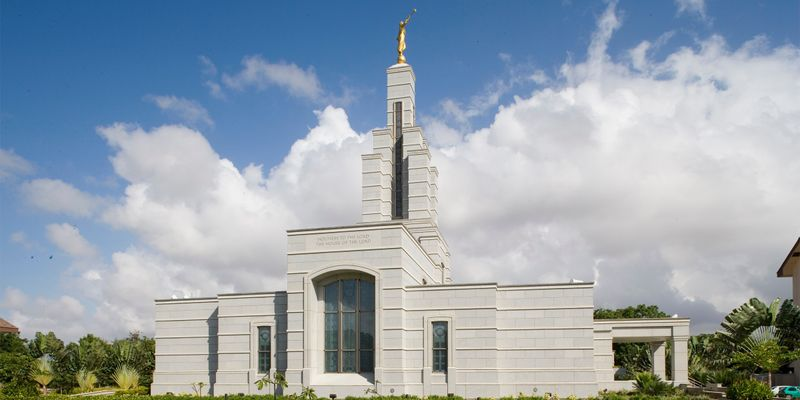
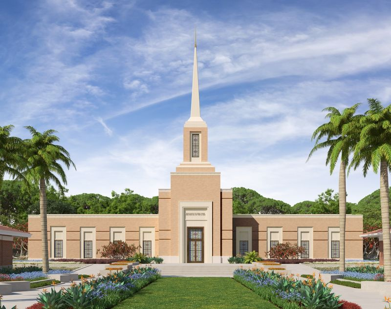
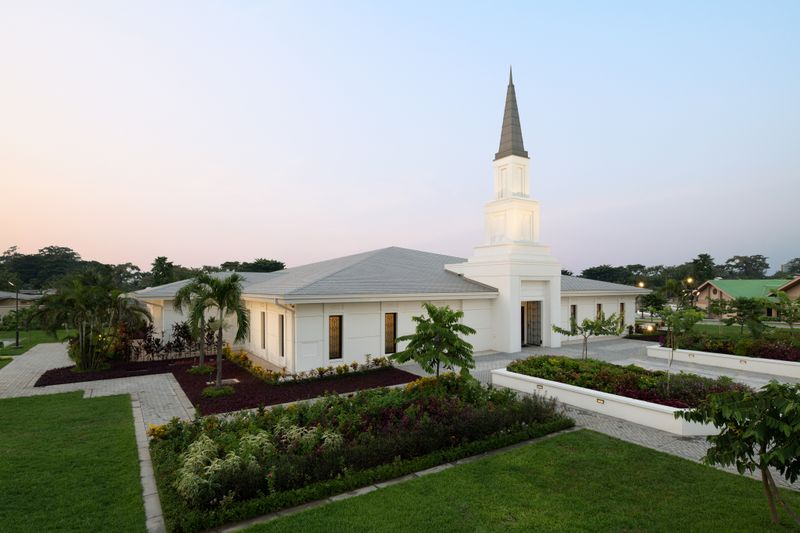
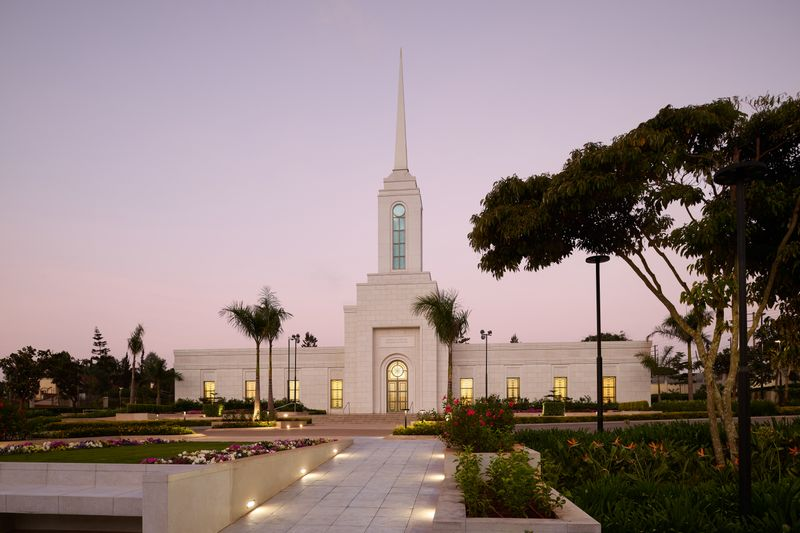
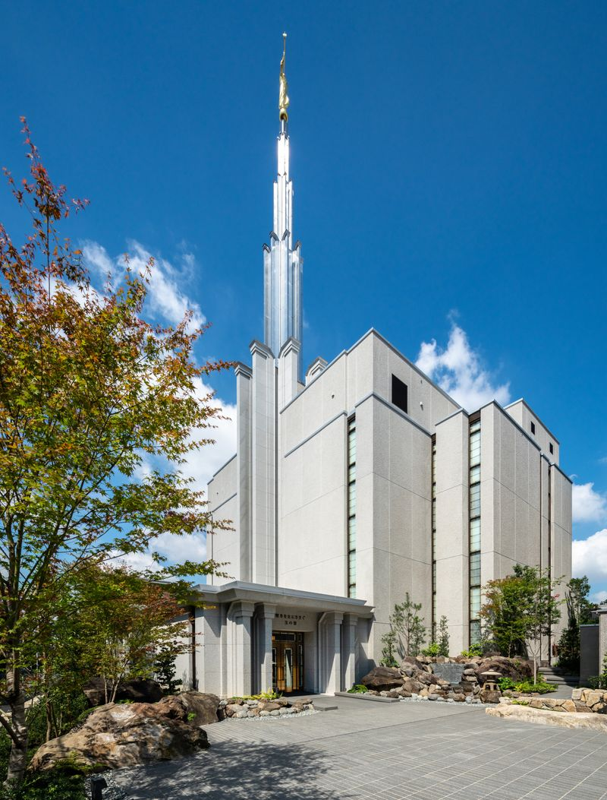

Temple Album
☰
Home
Old
New
Large
Small
Home
Aba Nigeria Temple

Accra Ghana Temple

Harare Zimbabwe Temple
Johannesburg South Africa Temple

Kinshasa DR Congo Temple

Nairobi Kenya Temple
Rome Italy Temple
Salt Lake Temple

Tokyo Japan Temple